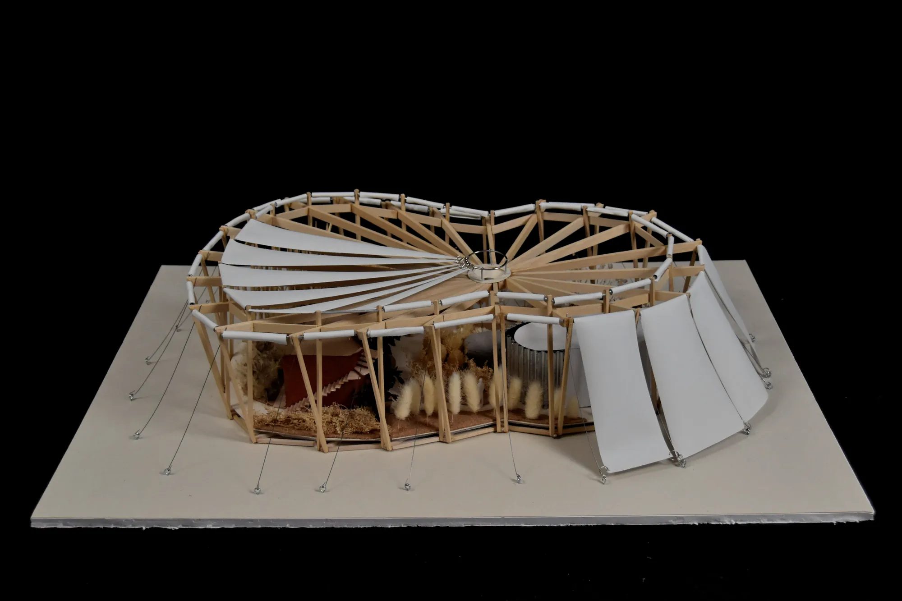
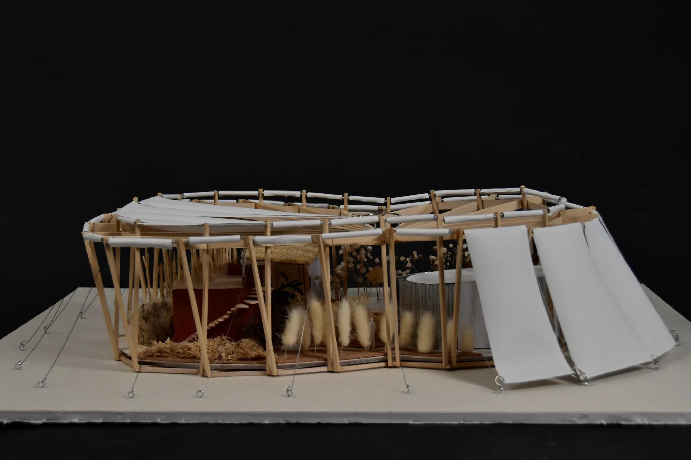
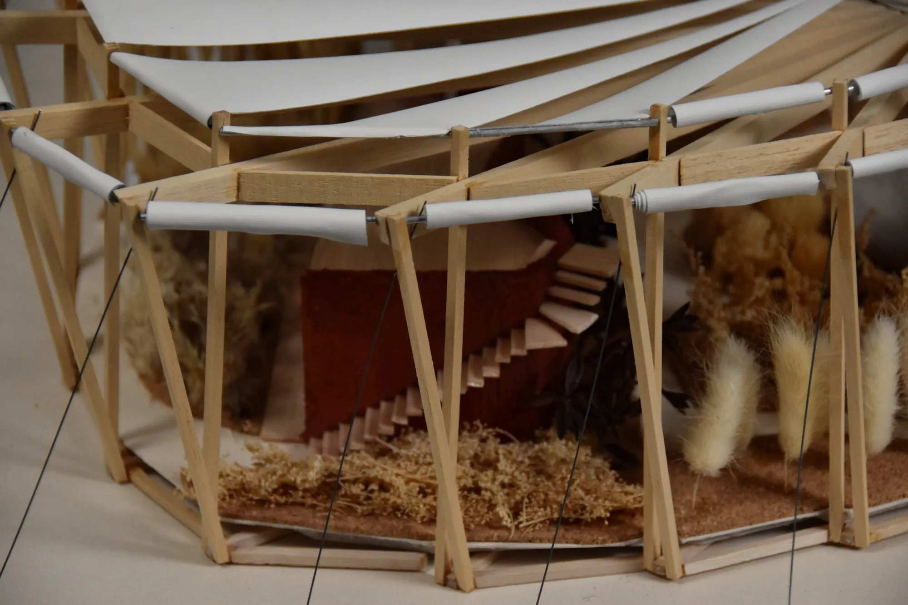
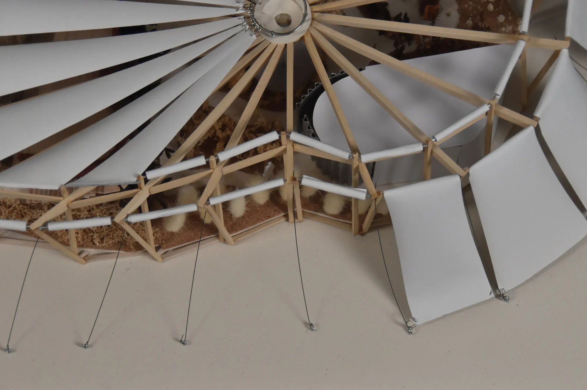
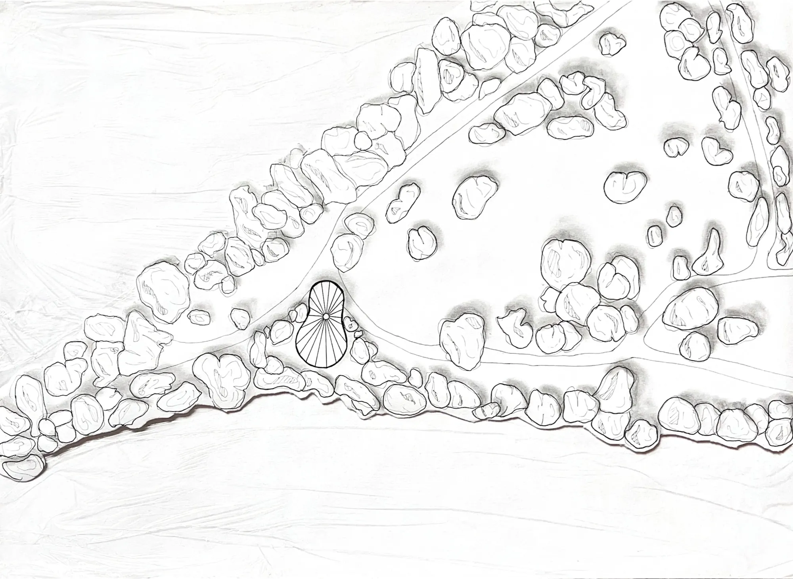
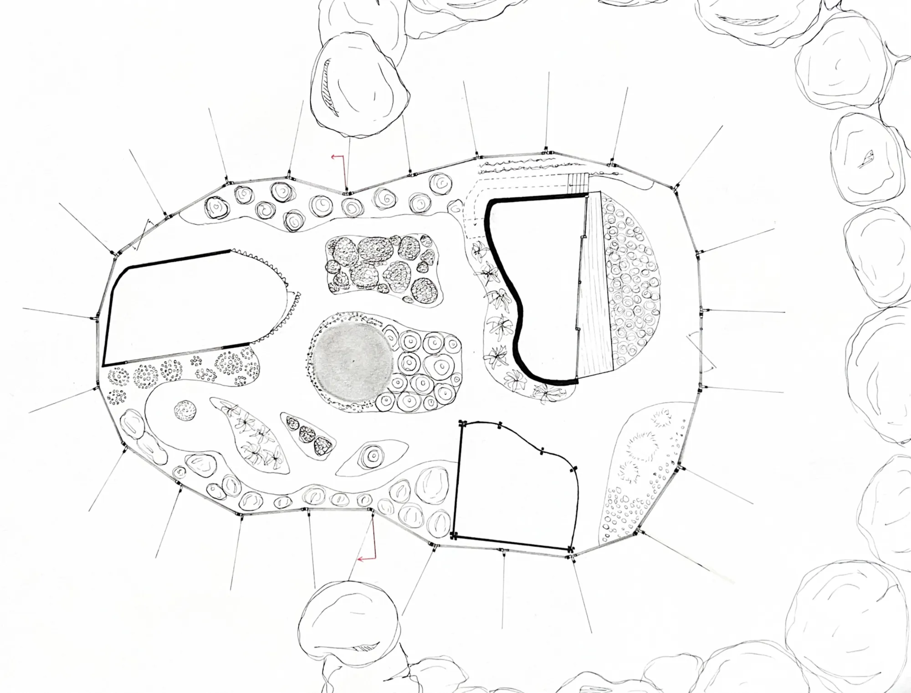
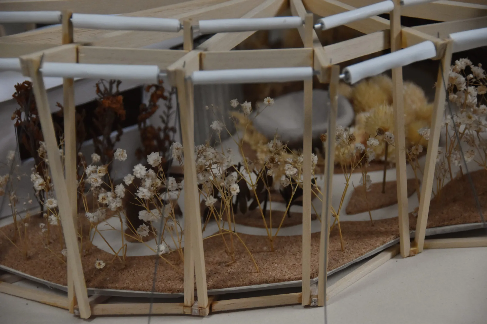
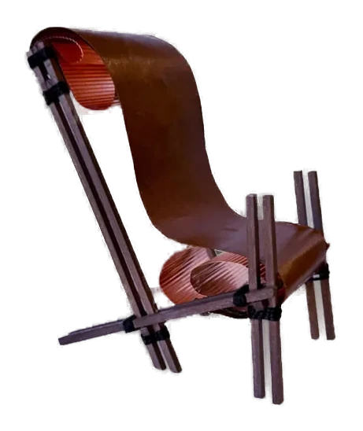

La serre habitée

Le projet prend place sur l’Île des Impressionnistes à Chatou. Il explore la rencontre entre deux pratiques artisanales : celle du luthier et celle du botaniste.
À travers cette association, j’ai cherché à créer un lieu hybride où habitat et atelier coexistent et dialoguent en permanence.
La serre met en relation deux manières de travailler la matière vivante : le bois, façonné par le luthier, et le végétal, cultivé et observé par le botaniste. Cette complémentarité permet d’imaginer une architecture tournée vers les matériaux naturels et le rapport au vivant.






Avant le travail architectural, une première expérimentation a été menée autour de la relation entre deux matières à travers la réalisation d’un objet de mobilier : une chaise.
Ce travail m’a permis d’explorer les notions d’assemblage, de structure et de matérialité. Cette première approche a servi de base au développement du projet architectural.

Projet réalisé en première année de licence à l’École Spéciale d’Architecture — 2025.